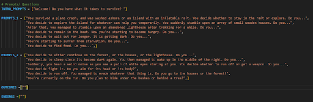
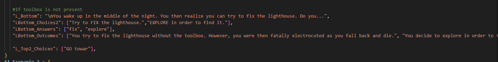

Text Adventure Game
Overview
With using Python, we will make a text adventure game where you are a stranded person on an island trying to find a way to survive and escape.
But the catch is, there are unknown entities lurking around. What are they? It's up to you to find out.
End Users
Our end users revolve around teenagers mainly around the range of age 13-16. Specifically, wei'll target those who favour in fictional
books and novels, as well as those who have an interest in thrilling and action-packed content. We also aim to target other teenagers that
usually are familiar with simple and easy to understand content, meaning what we're going to make won't be too long and boring as we consider
all of our end users.
Requirements
Many ways to end the game/story
Many events will be randomized
The entire play time of the game will not be too long.
Simple and Understandable
Story will not be too complex and not too twisted and rather straightforward.
Vocabulary implementing will be minimal for the narrative and plot. Simple words will be
considered instead.
The game will be balanced fairly and the difficulty will be justified.
People can be anticipated to unlock more than 1 ending to the game.
The enemies in the story migh be interesting.
Maybe some hidden easter eggs and references
Many options to choose from.
Implications
There are only a few things to consider when it comes to aesthetics. We plan to implement the use of Ascii art in order to help tell
the story and direct the narrative in a much more visual and effective way. We could also try to change the color of the text if it is
a guaranteed possibility in Python in order to help set the tone and mood of the storyline.
The coding might get confusing at times, so many tests and debugging will be considered when coding the entirety of the game. We plan to run
the game a number of times in order to clear it of any glitches or bugs. We will also make sure that the question format will be multiple choice,
and have the A,B,C & D options working regardless of a lower or uppercase input. One more thing are the outcomes and events that happen in the story.
We plan to code a rarity into the game if possible, so that there might be a sense of randomness in some parts of the game.
The game will feature simple instructions along with its simple format. The prompts and messages will be clear and concise so that nobody might get confused.
And as said before, all questions will be multiple choice, just so it is easier to operate within and that there will not be too much unnecessary guessing.
As we are aware of copyright, we plan to replace and change some content that we have took inspiration from. We can slightly change the concepts like adding
and removing certain parts that we think feels copied and try to put our own spin on it, in order to give out as much originality as possible, despite having
most concepts inspired from certain media.
Development
In order to create the story prompts and outputs, I needed to write the questions as variables. I then grouped the variables based on the story parts to make it easier for
Earl to understand and code together with the game mechanics. I also wrote in separate variables to group the outcome texts and endings.

Testing
Input = ENTER
Expectation - The text will appear in its respective areas.
Output - Images
.png)
Feedback
Do you think the lists are convenient enough?
"Sort of, but maybe put some indications.
Are there any improvements necessary?
"Maybe some indications like comments, so I'll be able to know the values when using variables.
Improvements
I decided to make more subgroups in the existing variable groups in order to make it organised with storing the story prompts answers.
I also added numbers in each line in order to make it easier for Earl to determine the values when coding the game functions and using the list.
.png)
.png)
.png)
Feedback
"Good, but maybe this time you can make it into a much more organised dictionary with more subgroups for each event of the story. You can also
place in the question choices that the player would have to type in."
Improvements
This time, I wrote that each question should have many subgroups in terms of the answers and outcomes all grouped together, which means that 1 question
in the game will have a group of its own variables surrounding it, including the answers that the player will have to input.

.png)
Testing
Input = Listed answer
Expectation - Outcome gets displayed depending on answer.
Output - Image


Feedback
"No, it's a lot more easier to code the game mechanics with a much more organised set of story variables."
Development
In order for the player to progress through the story, we made it so the player would have to either type in A - D, or a short answer. We then made a
function that records the player's answer to give off a series of outcomes depending on the player's answer.


Testing
Input = Listed answer
Expectation - Respective question displays after the chosen answer is recorded.
Output - Images


Feedback
Final Code